TECH GUY · RUN-EXP-07 · 03 NOV 2026
Três linguagens.
A mesma arena como referência.
Exploração visual original para futuros universos digitais e proposta de um teste híbrido 2.5D. Artes conceituais geradas; nenhum cenário convertido.
Comparação lado a lado
A mesma captura seed63 é a referência das três imagens. O gerador mantém a composição geral, mas reinterpreta pixels do HUD/personagens e desloca parte do enquadramentoB. Essas diferenças não são propostas de gameplay ou UI. Nenhuma imagem gerada é captura Unity.


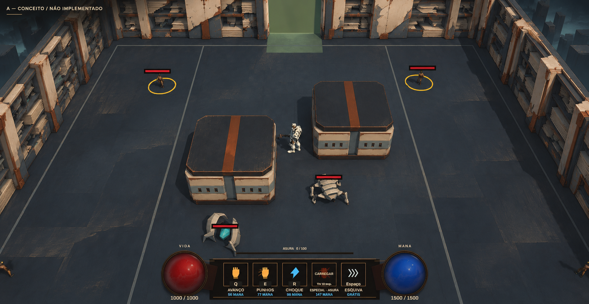
As três alternativas

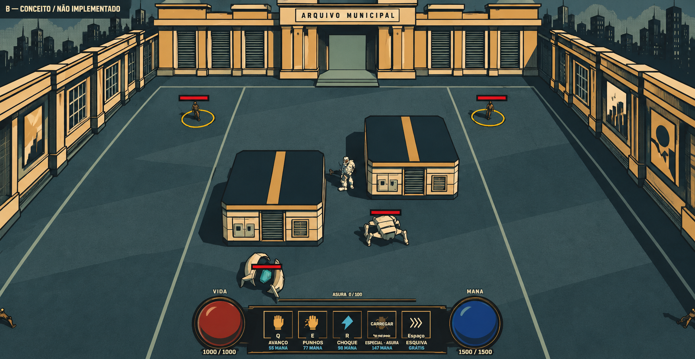

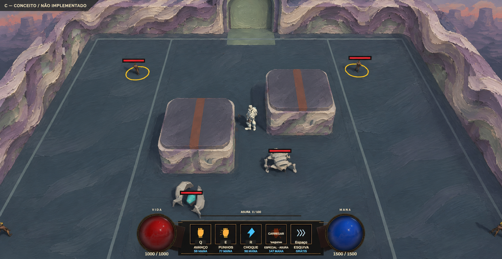
A — Arquivo Digital Fragmentado
Estratos, cerâmica e juntas estruturais. Maior continuidade com FirstSector05.
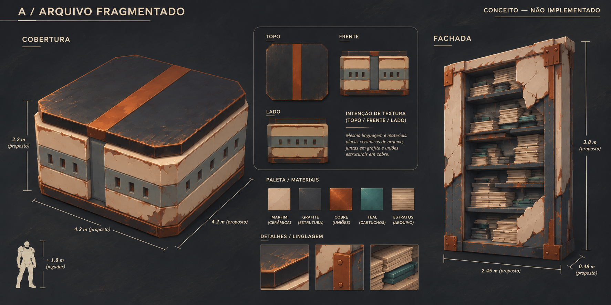
B — Metrópole Gráfica Ilustrada
Contornos de tinta, fachadas urbanas e retícula nas bordas.
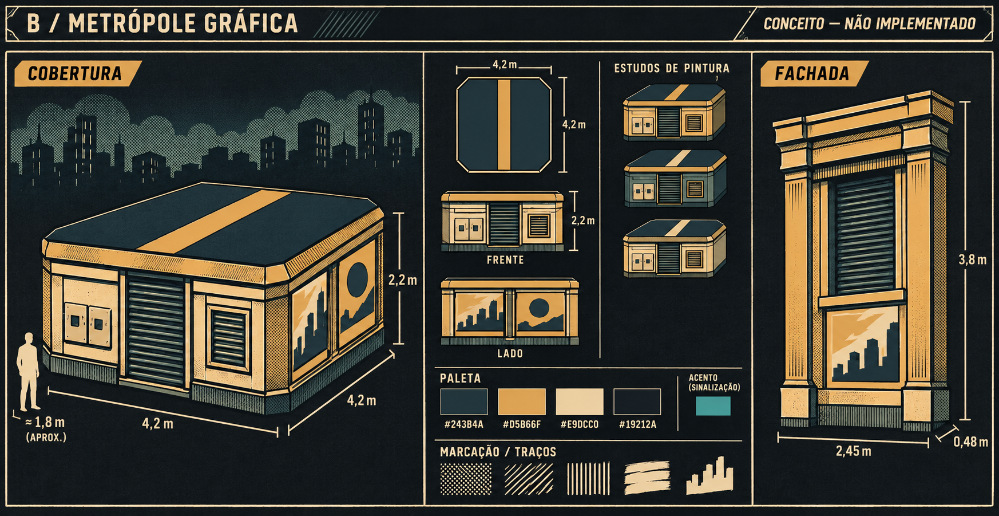
C — Realidade Corrompida Pictórica
Impasto mineral, pinceladas e curvas internas; física permanece retangular.
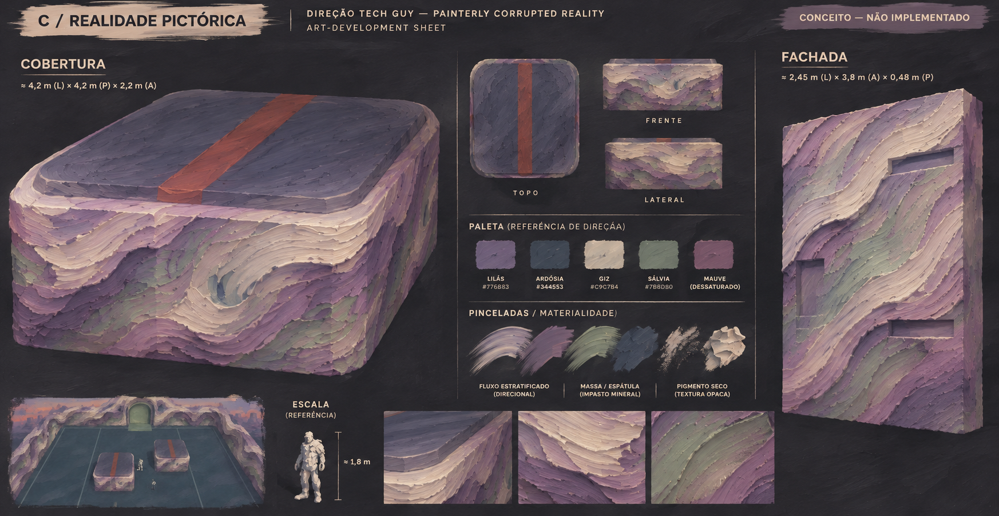
Evidência do jogo real
Capturas novas desta tarefa pelo teste existente de ambiente; nomes05 pertencem ao helper histórico. Mesmo projeto atual, arte05 produtiva. Fixture com jogador imune e posições de LOS assistidas; AI e navegação nativas ativas. São evidências de baseline, sem 2.5D implementado.

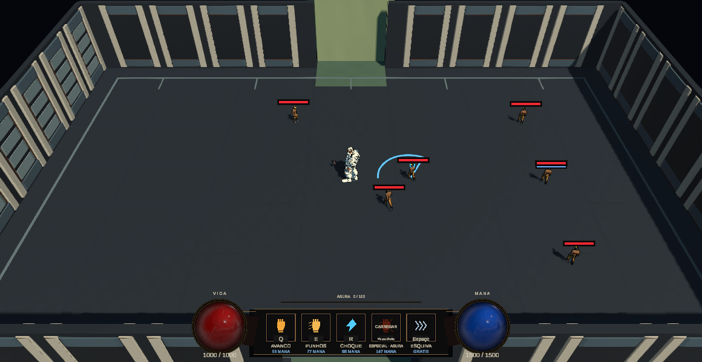

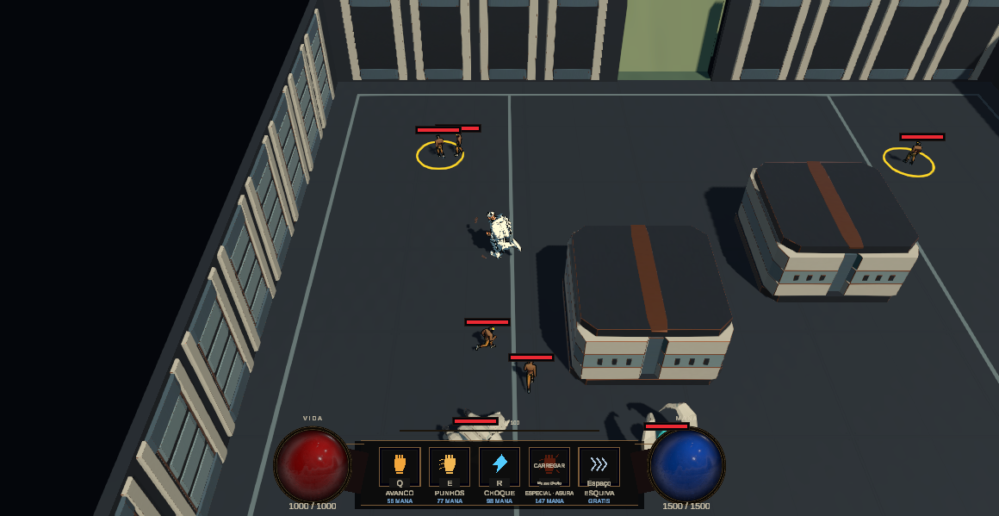

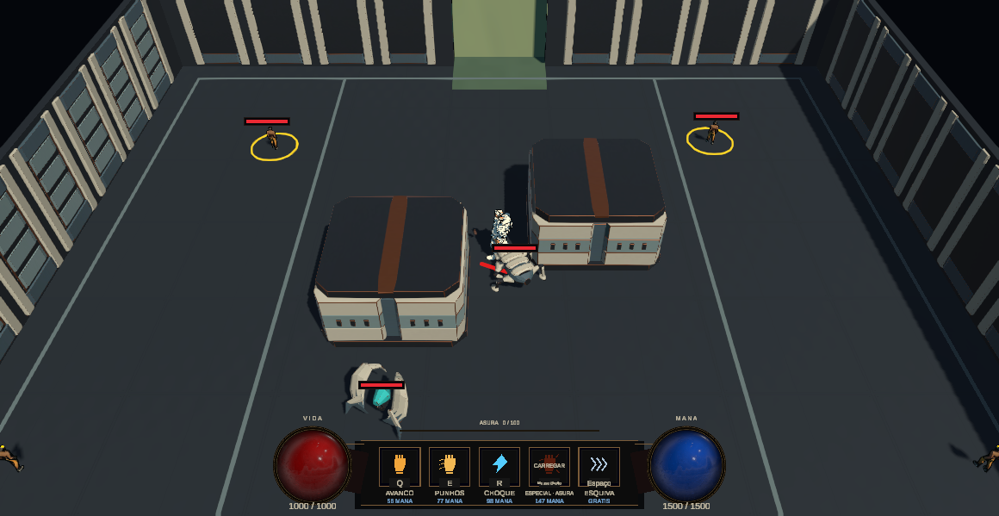

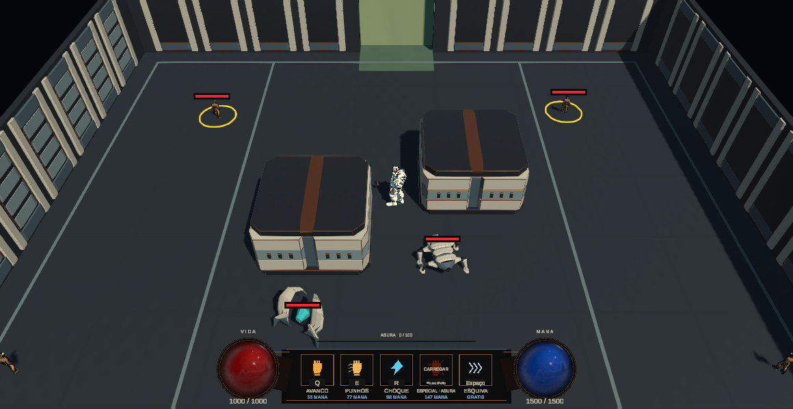

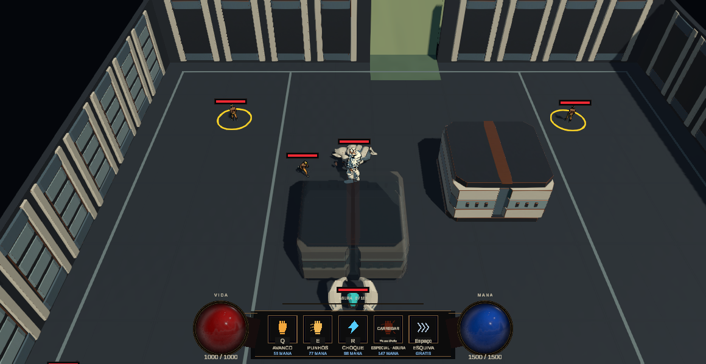

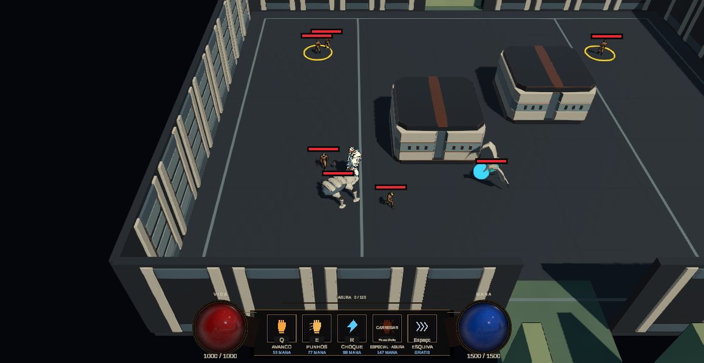

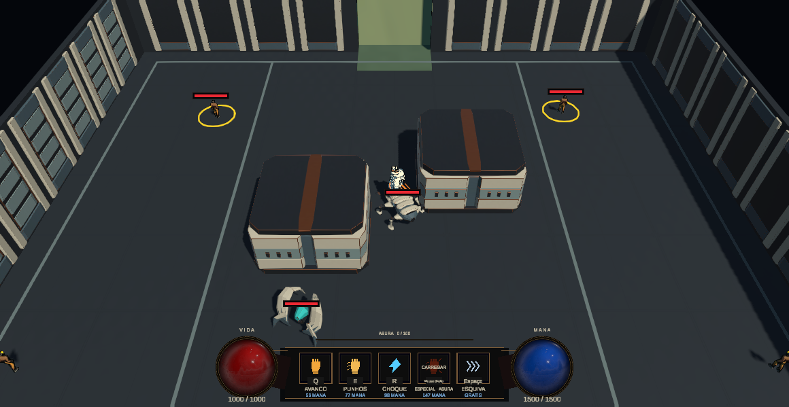
Câmera, escala e limites de metadata
URP 17.5.0 (manifest atual); UniversalRenderPipelineAsset ativo, espaço Linear, qualidade Ultra. Renderer UniversalRenderPipelineAsset_Renderer: zero renderer features via recurso MCP. Asset: HDR ligado, render scale 1, MSAA 1, depth/opaque texture desligados; sombras da luz principal, mapa 2048, quatro cascatas, distância100, soft shadows; sombras de luzes adicionais desligadas. São configurações encontradas, não medições de GPU.
Inspeção aditiva temporária da FirstSector em Edit Mode, fechada sem salvar: luz Directional branca, intensidade1,6, sombras Soft, Euler(52;328;0). Câmera perspectiva FOV40, near0,2/far500. Transform serializado (0;10;-18), Euler(44,7121;0;0), não confundir com follow em runtime. Configuração follow16m/16m/ângulo0. Sem binding normal de órbita/zoom encontrado. Variações futuras não estão proibidas nem certificadas.
MCP confirmou URP/Lit em Ceramica grafite cobre (atlas BaseColor/Normal/MetallicSmoothness), Piso de arquivo (ArchiveFloor) e Estrutura de arquivo. Shader.Find confirmou Lit, Simple Lit e Unlit disponíveis; nenhum material novo foi criado. Meshes/fontes05 e prefabs permanecem originais.
Capturas reais e condições
Teste existente Archive05ComparisonPreservesCoverRoutesLosMovementAndAbilities via Unity Test Framework/MCP, job0c4eed4e5e0042fba8845412ced7466e: 1/1 Passed, 17,5907712s de seleção, sem skipped/falhas. Uma repetição para tentar coletar câmera: jobbb7e725898674b47a8a286c54feff5e6, 1/1 Passed,14,8307034s. São duas execuções do mesmo caso, não dois testes distintos. O sampler temporário de Editor não sobreviveu ao reload; nenhum arquivo de telemetria de câmera foi produzido. Reconstrução posterior do planejador executada via CodeDom; tentativa Roslyn falhou por dependência MetadataReader, preservada como falha de ferramenta.
As imagens utilizadas são da primeira execução: pasta original run-exp-03/firstsector/20261103-214151-6130699, copiada integralmente para run-exp-07/review/baseline. Nomes05 pertencem ao helper legado; data, job e execução são atuais07. Segunda execução original:20261103-214738-2761800, preservada. ScreenCapture real,1160×599 pixels; não1920×1080. O helper congelou timeScale0 nas vistas gerais e comparou apresentação04/05; as referências principais07 usam after, arte05 produtiva.
| Referência | Arquivo no pacote | Condição |
| Arena coberta / base comum A/B/C | baseline/05-room-cover-after-normal-camera.png | Seed63,nó1, jogador no centro; mesma imagem de entrada para os três conceitos |
| Arena aberta | baseline/05-room-open-after-normal-camera.png | Seed0,nó1; referência separada, não A/B de geometria idêntica |
| Jogador junto à cobertura | baseline/05-room-player-circulating.png | Movimento nativo pela rota lateral |
| Fragmento / telegraph | baseline/natural-Fragmento-windup-node-1.png | Fase real, aviso vermelho ao lado do jogador |
| Emissor normal / LOS | baseline/natural-Emissor-idle-node-1.png e emissor-blocked/reacquired | Roster real; fixture posicional explícita |
Fixture: jogador imune, warps para entrada/LOS, AI/nav/dano inimigo ativos, remoção de CoinDrop em memória; preferência de arma/moeda/resumo e SessionState restaurados pelos scopes existentes. Não é gameplay humano sem assistência. Passou igualdade de contagem/bounds dos colliders entre apresentações, dois paths completos, raio de cobertura, movimento real e bloqueio/retomada de Emissor. Não prova método2.5D, pois nenhum foi implementado.
Escala e câmera reconstruídas, não amostradas no PNG
Executado no Unity o planejador puro com asset FirstSectorManual e seed:0→centro(500;0;38), arena29×19m;63→centro(500;0;43), arena28×24m. Fonte do fixture posiciona jogador no centro antes da captura. Pela fórmula atual do follow: seed63→câmera(500;16;27), Euler(45;0;0); seed0→(500;16;22). São reconstruções de configuração/código, não transform medido no mesmo frame. O CSV poses-node-1 registra posições reais dos inimigos após a vista geral, não daquele frame exato. Essa limitação deve ser corrigida no manifesto do futuro A/B implementado.
Faixa observada: follow atual em sala coberta/aberta, FOV40; não há intervalo de zoom certificado. QA futura deve testar center/bordas e frente/trás das duas peças antes de aceitar uma faixa. Fonte de escala humana ~1,8m nas pranchas é referência ilustrativa, não medição do rig.
NOT TESTED: desempenho2.5D, outras resoluções nesta rodada, suporte de novas texturas/fader, gameplay dos conceitos. Console inicial0erros/aviso de Input Manager; final sem erros de gameplay observados e warnings existentes de keys/AbilityHolder. Não corrigir tuning/bindings para silenciar warning fora do escopo.
Integridade final e QA do pacote
DONE:47/47 preferências TechGuy existentes idênticas,0adicionadas/removidas.2367/2368 arquivos protegidos idênticos;0adicionados/removidos nesses escopos. Única divergência: ProjectSettings/ProjectAuditorSettings.asset, modificado já na entrada e diferente no hash final; ao final coincide comHEAD. O agente não editou/restaurou esse arquivo. Origem da transição não confirmada; não atribuir causalidade nem restaurar conteúdo antigo por suposição. Não se declara integridade byte a byte desse ajuste doEditor. Evidência:evidence/integrity-comparison.json e snapshots antes/depois.
Editor final NexusBlockout limpa/Edit, timeScale1, assistênciaTitanicConductorfalse, seedoverride vazio e scope de resumo encerrado. Sem commit/push. Capturas e geração são isoladas emDocs/Tools. Revisão das seis artes feita nas imagens retornadas peloImageGen; baseline cover/windup aberta porview_image.
BLOCKED: préviaHTML no navegador da ferramenta, por política que recusa file:. Nenhum contorno do bloqueio foi tentado. NOT TESTED: renderização visual e interação doHTML em navegador real. Verificação estática deHTML/caminhos, assinatura/dimensões/CRC dePNG, proveniência/hashes e integridade doZIP são independentes e constam empackage-qa.json. Essa limitação permanece explícita em vez de alegar inspeção visual deHTML não executada.
Primeiro teste proposto: duas peças
RUN-EXP-07.3 — proposta técnica de duas peças, sem implementação
DONE: proposta compatível com owners e configuração encontrados. NOT DONE / NOT TESTED: qualquer método2.5D em runtime, custo A/B e assets de produção. PENDING DEVELOPER APPROVAL: direção/recorte antes de07.5. Não alterar URP global, câmeras, shaders de combate, física ou catálogo de boons.
Recorte e associação física
ComparadorA é a apresentação05 atual. ComparadorB futuro muda apenas: uma cobertura existente, preferencialmente Cobertura deslocada0; um único módulo de fachada periférica equivalente a um rack existente. Não retirar a segunda cobertura, o piso, as outras paredes nem o cenário inteiro. Overviews ilustram a linguagem geral; implementação futura permanece duas peças.
Cobertura: envelope4,2×2,2×4,2m, pivot de autoria no apoio inferior; centro físico local(-3;1,1;-1,5), pé(-3;0;-1,5). Origem do futuro filho visual deve compensar pivot para reproduzir bounds nativos, sem duplicar escala dos pais. Fachada: módulo visual de referência2,45×3,8×0,48m (fonte FirstSectorEnvironmentArt); recuar/deformar somente dentro da parede física existente. Confirmar medida instanciada antes da autoria final. Sem collider novo.
FirstSectorRoomPresentation e FirstSectorEnvironmentArt já controlam meshes/materiais; adaptar apenas a família aprovada ou um prefab visual de revisão local. SetVisible atual troca o conjunto inteiro e não é toggle por peça. Comparador futuro deve preservar A e alternar somente as duas peças, sem chamar toggles globais que mudem outras superfícies. Racks são combinados: isolar uma instância de módulo visual no comparador é trabalho local, não sinal de que existe API pronta. Não criar WorldStyleManager, renderer por universo ou hierarquia especulativa de ScriptableObjects.
Comparação dos métodos
| Método | Compatibilidade e custo | Uso proposto / fallback |
| Plano ilustrado fixo | MeshRenderer/URP existente; pouca geometria, vista lateral revela ausência de espessura | Fachada periférica em primeiro teste, com laterais se necessário |
| Cards de profundidade | Ordenação3D real, mais renderers/pixels/overdraw; alpha suave é risco | Máximo poucas camadas só onde silhueta justificar; começar com uma |
| Mesh recortado / alpha clip | Depth mais previsível que blend; bordas/mips e fade precisam prova | Silhueta de fachada, cortar margens em geometria |
| Volume simples / faces pintadas | Topo/lados/sombra correspondem à massa física, exige UVs coerentes | Primeira opção de cobertura, sem billboard |
| Projeção de textura | Estica nas faces oblíquas e pode depender do ponto de projeção | Não necessária às duas peças; UV convencional primeiro |
| Impostor único/multivista | Bake/atlas, memória e transição de vistas são custos novos | Adiar; não justificado para dois objetos próximos |
| Mesh3D + ilustração | Mantém volume/sombra, pode preservar triângulos e somar custo de textura | Fallback se plano falhar; não prometer otimização |
| Cartão orientado à câmera | Rotação visual diverge do collider fixo | Não usar em cobertura; só ornamento distante se caso concreto justificar |
URP/Lit, Simple Lit e Unlit foram encontrados via Shader.Find; materiais ativos usam Lit. Não foi criada feature nova. Fonte instalada/fader é autoridade de integração. Referência técnica externa: URP Unlit — Unity6000.5, consultada nesta tarefa; alpha clip/blend são opções disponíveis, não prova de resultado no jogo.
Profundidade, câmera e oclusão
Câmera perspectiva FOV40 e follow16/16/ângulo0 são baseline, não câmera fixa universal. Mesmo sem órbita, a vista relativa muda quando o objeto atravessa centro/borda. Primeiro suportar o percurso real atual: centro, extremos laterais, aproximação, frente/trás e ida/volta. Nenhuma faixa extra está certificada. QA exploratória pode testar FOV35/40/45 e yaw±10/altura14/16/18 somente na cópia de teste, sem publicar controles ou aceitar automaticamente toda combinação. Se falhar fora do follow aprovado, manter3D naquela peça e registrar faixa; não limitar controle do jogador silenciosamente.
Usar depth test nativo, evitar sortingOrder para desenhar tudo na frente. Conferir jogador/Fragmento/Emissor, flechas, lança, tornado, eletricidade e fogo à frente/atrás/interseção. Não deixar margens de textura cobrirem perigo. Fachada não deve projetar ornamento sobre área de circulação. Cutout e blend durante fade têm comportamentos distintos.
CameraOcclusionFader procura MeshRenderer nos filhos do collider, pai ou attachedRigidbody, sem subir pela raiz inteira. Usa probes0,5m, opacidade0,12, fadeout0,12s/fadein0,25s/restoredelay0,12s, pathreveal2,5m. Material com _OcclusionOpacity segue caminho dither; Lit/Simple Lit/Unlit conhecidos recebem clone transparente temporário, ZWrite0, DepthOnly/DepthNormals desligados. _ALPHATEST_ON é desligado no caminho transparente: um plano recortado pode revelar seu retângulo/margens ao desvanecer. Não presumir suporte alpha clip perfeito. Começar com mesh recortada sem grandes margens; testar restore material/alpha/renderqueue e custo. Shader novo só se falha concreta justificar e dentro de autorização específica. Collider e LOS nunca somem com o fade.
Iluminação e sombra
Cobertura: começar com URP/Lit opaco e pintura de albedo material; manter normais geométricas e luz real. Pintar microvariação/oclusão de fendas, evitar sombra direcional dura sobre a textura. Fachada distante: Unlit pintado é alternativa, com sombra projetada desligada se ela duplicar sombra desenhada; Lit simples é controle se player parecer desconectado. Unlit não responde à luz como Lit; comparação deve declarar essa diferença deliberada.
Contato no chão preferencialmente pela massa3D nativa/render volume da comparação, sem novo collider ou blob duplicando sombra existente. Uma única fonte de sombra forte. Não criar normal/depth map por rotina; usar normal somente se uma prova de relevo justificar ganho visual/custo. Sem baked lightmaps novos para arena gerada em runtime nesta proposta. Não alterar exposição/bloom/LUT global para salvar uma imagem incorreta.
Asset e custo — estimativas, não benchmark
Proposta inicial: cobertura atlas albedo1024²; fachada1024×2048, dependendo da ocupação medida no quadro1920×1080. PNG de conceito não define orçamento final. sRGB para albedo; mapas de dados, se existirem, lineares. Mipmaps ligados para minificação perspectiva; Read/Write desligado, wrapClamp em fachada, atlas com8–16px de extrusão no mip base e teste de bleeding em mips. Esses valores são ponto de partida, não preset aplicado. Ajustar pelo tamanho real e teste de bordas. Transparência só para silhueta necessária, margens cortadas; cobertura opaca.
Windows alvo: avaliar BC7 para preservar pintura/alpha, fallback de compressão conforme suporte da build; verificar resultado no Inspector/build. Estimativa matemática BC7 8bpp com cadeia completa de mips≈4/3:1024²≈1,33MiB;1024×2048≈2,67MiB; total≈4MiB somente albedo. RGBA32 sem compressão≈16MiB para ambas com mips. Cabeçalhos, alinhamento, streaming, cópiasCPU, textura residente e VRAM real não estão incluídos. Normal opcional adicionaria custo; não está exigida. Atlas compartilhado economiza switches potenciais, mas clones de fade podem aumentar materiais e quebrar batches.
Menos triângulos não garante menos tempo de GPU: pixel coverage, blend, shadowpass e texturas podem custar mais. Medir CPUmain/render, GPU quando marcador válido, GC, batches/drawcalls, renderers, tris e memória total/texturas; VRAM somente com ferramenta apropriada. Não rodar stress novo de desempenho nesta fase07.0–4. Benefício principal pode ser autoria e diversidade visual.
Matriz futura de validação07.5/07.6 — ainda não executada
| Área | Método e condição observável |
| Comparabilidade | Mesma seed63/nó1, sala/roster, arma, posições e agenda de ações; registrar transform por frame de captura, resolução/qualidade/backend/hardware/versão; A/B alternados |
| Geometria | Mesma contagem/bounds/flags/layers de colliders e NavMesh;0 novos obstáculos,0passagens visuais falsas; overlay físico além da imagem limpa |
| Navegação | Paths completos pelas duas laterais, player e Fragmento realmente percorrem ambos; mesmo destino válido antes/depois |
| LOS/tiro | Emissor bloqueado atrás da mesma cobertura e readquire após contorno; nenhum projétil atravessa por alpha; mesma autoridade nativa |
| Dash e contato | Dash contra cada face/canto, sem penetração/teleporte; básicos e especiaisGauntlet/Spear/Bow preservam resultados |
| Telegraph/VFX | Windup/ataque/recovery visíveis em todos os pontos;0ocultações que impeçam reagir; observar vento/fogo/eletricidade da tripla sem mudar efeitos |
| Profundidade/fader | Cruzar frente/trás dos dois objetos e probes;0margens/retângulos visíveis no fade, restore completo dos materiais e sombras; ameaças legíveis |
| Câmera | Percurso follow atual e resoluções1160×600,1280×800,1920×1080; faixa adicional exploratória registrada separadamente |
| Texturas | Bordas/cantos/mips/compressão sem halo/cintilação que afete leitura; topo/lados contínuos, nenhum pé flutuante |
| CPU/GPU | Warmup, blocos A/B/BA iguais repetidos, mediana/p95 e amostras brutas; cena real,8/32/64 somente se relevante; Editor separado de release |
| Memória/batches | Comparar texturas residentes, material instances, drawcalls/shadowpass e overdraw no FrameDebugger; registrar indisponibilidades |
| Autoria | Cronometrar pintura/UV/import/revisão/correção por peça, comparar iterações e aceitar custo conscientemente |
| Integridade | Hash/prefs atuais antes/depois, sem restauração antiga; sair dePlay e voltar à cena/seleção de entrada |
Sem meta universal de FPS ou ganho percentual inventado. Resultados devem ser aceitáveis no orçamento acordado a partir do baseline e variabilidade medida; piora precisa de decisão consciente em troca de autoria/arte. Fachada e cobertura podem receber decisões diferentes. Implementação das duas peças exige escolha explícita do desenvolvedor; publicação global exige nova autorização depois do protótipo.
Decisão artística pendente
Escolha A, B ou C, ou indique os ajustes visuais necessários antes da escolha. As pranchas são propostas; aprovação de imagem não valida integração ou desempenho.
- Qual linguagem você escolhe para o primeiro protótipo?
- A cobertura e a fachada dessa prancha representam a aparência desejada? Que ajuste é necessário?
- Após escolher, você autoriza expressamente07.5 para somente essas duas peças, com revisão separada antes da conversão de produção?
STOP após07.4. Sem07.5/07.6, renderer novo, novos universos jogáveis, boons ou alteração de combate. C05 e o fogo existente da tripla permanecem protegidos.
Relatórios e fontes incluídos
- RUN_EXP_07_0_BASELINE.md · Markdown
- RUN_EXP_07_1_MULTIVERSE_ART_DIRECTION.md · Markdown
- RUN_EXP_07_2_VISUAL_CONCEPTS.md · Markdown
- RUN_EXP_07_3_TECHNICAL_PROPOSAL.md · Markdown
- RUN_EXP_07_RELATORIO.md · Markdown
Manifesto de imagens, proveniência e hashes · Aplicação de skills
Análise de leitura por candidato e limitações
RUN-EXP-07.2 — artes comparáveis da mesma arena
DONE: três overviews e três pranchas originais raster, comparações individuais com baseline e página offline. PENDING DEVELOPER APPROVAL: escolha artística. NOT DONE: asset Unity pronto, UV final ou protótipo jogável.
Artefatos e método
Todos os conceitos foram gerados pelo ImageGen integrado, nesta conversa, sem CLI/API externa. Mesmo PNG real seed63 usado como entrada das três vistas; cada prancha usa sua vista como referência. Prompts exatos em review/prompts; hashes/dimensões/paths em asset-manifest.json. Sem seed/modelo exato retornados pelo sistema, não inventá-los. Originais copiados sem transformação raster nem remoção de metadados. Nenhuma imagem foi produzida no Blender, cuja conexão MCP falhou.
| Direção | Vista completa | Prancha detalhada | Método futuro sugerido |
| A | images/A-overview.png | images/A-sheet.png | Fachada fixa recortada, cobertura em volume de faces pintadas |
| B | images/B-overview.png | images/B-sheet.png | Fachada/skyline em poucas camadas, quiosque em volume gráfico |
| C | images/C-overview.png | images/C-sheet.png | Fachada com plano pintado, cobertura com pintura contínua em volume |
Cada prancha mostra close-up de cobertura, fachada, linguagem de superfície, paleta e estudos de topo/frente/lado. São referências de autoria: imagens completas incluem luz, perspectiva, títulos e composição; não são texturas prontas nem atlas/UV certificados. O gerador não forneceu camadas editáveis/PSD/blend; raster PNG é o original disponível. Prompts/manifest/builder são editáveis; não equivalem a fonte pictórica em camadas. Extração/redesenho/UV e validação só após direção aprovada.
Controle e deriva observada
As três mantêm duas coberturas na diagonal, corredor central/lateral, jogador entre elas, inimigos de referência e fundo periférico. A e C seguem mais de perto o enquadramento; B desloca parede e alguns limites na imagem. O modelo reinterpretou pixels dos personagens/HUD, texto e acessórios. Não usar essas alterações como proposta de redesign. HUD e inimigos de produção continuam exatamente os existentes.
As dimensões de output ficam no manifesto; proporção aproximadamente igual ao baseline, sem alegar registro pixel a pixel. Não há transform/collider no conceito. A comparação tem composição controlada por referência, não é um teste A/B implementado. Em C a porta pintada arredondou o topo e a faixa cobre pode parecer salmão: não promover esse ornamento a navegação/ameaça. Nas pranchas, desenhos de recortes e cotas são ilustrativos; a geometria nativa governa o futuro asset. B precisa devolver cornijas para dentro do envelope e evitar aparência de porta no quiosque antes de integrar.
Leitura de gameplay — análise explícita por candidato
| Check | A | B | C |
| Jogador | Claro contra chão grafite; não clarear topo ao mesmo valor | Branco contra petrol; linha de contorno do cenário deve ser mais fina | Claro contra ardósia; fundos giz atrás dele exigem fader |
| Fragmento | Baixo/quadrúpede, contraste no piso; evitar marfim no chão | Silhueta baixa reconhecível, contorno de parede não deve dominar membros | Marfim distinto de piso; reduzir pincelada sob pés/mandíbula |
| Emissor | Teal e duas conchas destacam; não repetir núcleo luminoso em cover | Perfil de conchas distingue de quiosque retangular; sinalização teal discreta | Conchas nítidas contra pintura; mauve não deve contaminar o teal |
| LOS ranged | Costura não equivale a fenda atravessável; volume é sólido | Shutter é placa fechada; cornija não pode sugerir tiro sob ela | Depressão pintada é rasa, nunca túnel; mesma massa bloqueia tiro |
| Rotas | Piso amplo, duas laterais e gap preservados | Planos largos guiam; corrigir deriva de enquadramento antes do teste | Chão contínuo, sem fendas/raízes nem relevo de rota |
| Silhueta física | Bevel só para dentro de4,2×2,2×4,2m | Cornijas/quiosque devem caber no mesmo volume | Curvas internas; bordas externas do obstáculo continuam inequívocas |
| Telegraph vermelho | Bom contraste no chão frio; proibir cobre saturado no piso | Não usar pôster vermelho nem hachura sob sinal | Não usar corrupção vermelha no playfield; reduzir ruído de pincel |
| VFX do player | Cobre dos props discreto para fogo/Titanic existente | Ocre não deve encobrir fogo, tinta não deve simular eletricidade | Evitar névoa clara sobre vento/fogo; manter espaço negativo |
| Oclusão frontal | MeshRenderer sob collider para fade; racks precisam associação local | Marquise/cartão pode cortar personagem; sem decoração sobre corredor | Plano de fundo e volume próximos; névoa nunca cobre ameaças |
| Sensibilidade câmera | Volume pintado tolera mais follow que cartão único | Perspectiva desenhada/linha varia no deslocamento, risco maior | Pincel e luz pintada denunciam mudança de ângulo; testar bordas |
Baseline real contém windup/ataque de Fragmento e LOS de Emissor; os overviews gerados são momentos de leitura, não cenas de stress de VFX. As células acima são análise/proibições, NOT TESTED em gameplay2.5D. Não há Burn/DoT novo: preservar fogo da tripla Titanic Fists + Conductor + Detonation exatamente como está.
Recomendação para uma fachada + uma cobertura
A tem maior continuidade com FirstSector05, menor dependência de traço global e permite separar textura expressiva de volume físico confiável. A mudança é localizada e reaproveita família/material. Custo de arte relativo baixo/médio: pintura de faces, união de quinas, um recorte de fachada e correções de câmera; estimativa de planejamento 2–4 dias úteis de artista técnico após aceite, sem compromisso e sem incluir retrabalho de decisão. B:3–5 dias; C:4–6; validar cronômetro de autoria em07.5. São hipóteses, não horas medidas de pintura manual da geração atual.
Maior risco A: estratos finos cintilarem e fachada perder espessura na borda. Fallback: plano fixo com laterais reais ou manter rack3D, preservando pintura. B e C continuam candidatas; A não é aprovada por ser recomendada. Nenhum vencedor de FPS pode ser escolhido sem comparação real.
Integridade final e limite de inspeçãoHTML
Integridade final e QA do pacote
DONE:47/47 preferências TechGuy existentes idênticas,0adicionadas/removidas.2367/2368 arquivos protegidos idênticos;0adicionados/removidos nesses escopos. Única divergência: ProjectSettings/ProjectAuditorSettings.asset, modificado já na entrada e diferente no hash final; ao final coincide comHEAD. O agente não editou/restaurou esse arquivo. Origem da transição não confirmada; não atribuir causalidade nem restaurar conteúdo antigo por suposição. Não se declara integridade byte a byte desse ajuste doEditor. Evidência:evidence/integrity-comparison.json e snapshots antes/depois.
Editor final NexusBlockout limpa/Edit, timeScale1, assistênciaTitanicConductorfalse, seedoverride vazio e scope de resumo encerrado. Sem commit/push. Capturas e geração são isoladas emDocs/Tools. Revisão das seis artes feita nas imagens retornadas peloImageGen; baseline cover/windup aberta porview_image.
BLOCKED: préviaHTML no navegador da ferramenta, por política que recusa file:. Nenhum contorno do bloqueio foi tentado. NOT TESTED: renderização visual e interação doHTML em navegador real. Verificação estática deHTML/caminhos, assinatura/dimensões/CRC dePNG, proveniência/hashes e integridade doZIP são independentes e constam empackage-qa.json. Essa limitação permanece explícita em vez de alegar inspeção visual deHTML não executada.